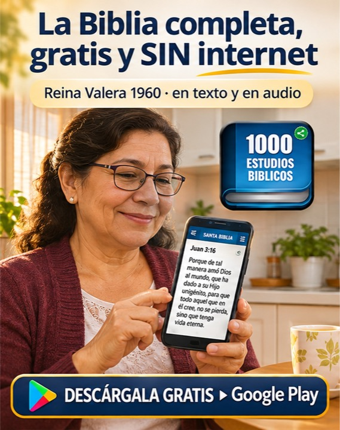

1000 Estudios Bíblicos
App cristiana · Gratis · Android
⭐ 4,9 en Google Play📲 +500.000 descargas🆓 100 % gratis
La Palabra de Dios en tu celular, aun sin internet
La Biblia Reina Valera 1960 completa para leer sin conexión y escuchar en audio, con más de 1000 estudios bíblicos, prédicas y devocionales.
Descárgala gratis en Google PlaySin registro · Sin pagos · Para celulares Android

- 📖Biblia completa sin internetReina Valera 1960, en texto y en audio.
- 📚Más de 1000 estudios bíblicosPara entender la Palabra en un lenguaje simple y claro.
- 🎤Prédicas, bosquejos e ilustracionesRecursos para pastores, líderes y jóvenes.
- 📅Devocional «20 días con Dios»Un plan de oración día por día.
- 🌱Promesas de Dios por temaPara cada momento de tu vida.
- 🖼️Miles de imágenes cristianasPara compartir en WhatsApp y Facebook.
★★★★★
La app mejor detallada y completa de educación y predicación del mensaje del Señor.Reseña en Google Play
★★★★★
Estoy aprendiendo a conocer más de Dios. Gracias por esta aplicación.Reseña en Google Play
Descárgala gratis ahora ▸
Más de 500.000 personas ya la usan para crecer en la fe.